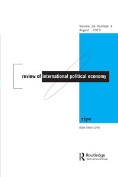
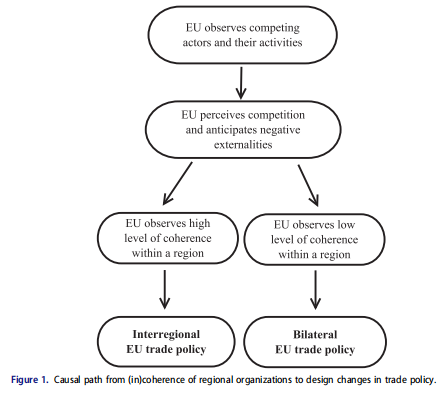

收录于合集

作品简介
【作者】 Katharina L. Meissner，维也纳大学欧洲一体化研究所助理教授，其主要研究方向为欧盟研究与区域一体化。
【编译】 刘瑛琛（国政学人编译员，吉林大学行政学院）
【校对】 蔡宇
【审核】 徐垚晟
【排版】 王国伟
【文章来源】 Katharina, M. (2019). Cherry Picking in the Design of Trade Policy: Why Regional Organizations Shift between Inter-regional and Bilateral Negotiations, Review of International Political Economy, 26 (5), 1043-1067.
期刊介绍

Review of International Political Economy, 国际政治经济学评论，创立于1994年，是一本以国际政治经济学为主要内容的同行学术评审杂志。该刊2018年的影响因子为2.800。
贸易政策设计中的选择：为何区域组织
在区域间谈判与双边谈判中转换
Cherry picking in the design of trade policy: why regional organizations shift between inter-regional and bilateral negotiations
Katharina L. Meissner
内容提要
过去三十年中，各国在世界贸易组织（下文简称WTO）之外建立起诸多优惠贸易协定。这些贸易协定的设计各不相同，包括区域组织之间签订的贸易协定、区域组织与国家之间签订的贸易协定以及国家之间签订的贸易协定。 作者在本文中将区域组织同其他区域组织单个成员国之间进行的贸易谈判定义为“双边”贸易谈判。
欧盟过去常常通过与世界其他区域组织之间的谈判来签署贸易协定，但现在却越来越多地转向双边贸易谈判。我们当如何解释这一变化？现有的研究较为关注国内政治因素。但作者认为，现有研究并不能充分解释贸易谈判设计从区域间到双边的变化。相反，当类国家行为体就贸易协定进行谈判时，区域性组织内部一致性（或缺乏一致性）则会引起贸易谈判设计从区域间到双边的变化。 作者假设，一个区域组织内部一致性 的缺乏 ，将导致其谈判伙伴接受双边 谈判 设计，即便这样会增加交易成本。当 不同国家 竞相与同一区域缔结贸易协定时，情况尤其如此 。作者认为以上解释是对传统研究路径的补充。
通过对欧盟与拉美、亚洲的区域组织间的互动进行严格的过程追踪以及对以上三个地区的谈判官员进行访谈，作者验证了其主张。 结果显示，当区域内部一致性衰减时，欧盟同这些区域组织之间的贸易谈判将会转变为同单个成员国之间的谈判，而这也是欧盟在以上地区为促进自身商业利益以及同中国、美国等国竞争所做的一种尝试。
文章导读
一、 研究现状
在贸易协定设计这一研究领域，出现了一场崭新的、充满活力的辩论，学者们从不同的视角探索着贸易协定的各项问题。然而，这项研究与特惠贸易协定中成员国差异的问题（也就是协定的“×边主义”）相当脱节。而且现有的关于国际贸易中的“×边主义”的文献主要关注多边主义和双边主义两者之间的差异，跨区域主义仍然有待探索。因此，在作者看来， 我们缺乏解释贸易谈判设计为何在区域间和双边之间变化的经验知识。 本文通过对欧盟与拉丁美洲和亚洲的区域组织之间互动进行实证研究，填补了这一方面的文献空白。
二、欧盟贸易政策 设计中的国内政治因素
研究欧盟贸易政策设计的传统路径主要关注国内政治因素，包括跨国公司和利益集团的影响以及欧盟内部各成员国自身利益两个方面。
有关贸易谈判的最新研究表明，从贸易协定中受益的主要是跨国公司。因此，跨国公司和商业组织很可能就贸易政策向欧盟展开游说。从现有的文献中，我们可以推断出以上行为体对欧盟的贸易政策主要有两种不同的偏好。一方面，他们可能偏好最广泛的贸易自由化，因此可能将区域间谈判作为次优选择进行游说；另一方面，考虑到谈判的进度和复杂性，出口导向和进口依赖型团体也可能支持双边主义甚于跨区域主义。 尽管对跨国公司和利益集团的研究表明，这些行为体对贸易谈判的启动至关重要，但从经验证据来看，他们对欧盟贸易政策特定设计（区域间还是双边）的影响有限。
对欧盟成员国利益的研究则认为，成员国偏好的异质性使得欧盟委员会在国际谈判中具有高度的自由裁量权，这也常常导致成员国与欧盟委员会间的制度性矛盾。 然而，受访者既未表明欧盟委员会和成员国之间就双边的贸易谈判设计存在制度性矛盾，也未表明某一成员国积极推动实施双边贸易谈判。
因此，从国内政治的角度来看，欧盟对拉美和亚洲地区的贸易政策 设计 为何从区域间转向双边，至今仍难以捉摸。 所以，作者认为，利益集团和欧盟成员国自身利益等国内政治因素并不能充分解释这一问题，我们有必要将注意力转移到国际层面的解释性因素上。
三、对贸易政策设计中跨区域
主义到双边主义转变的理论说明 ****
在这一部分，作者 综合了国际关系、国际政治经济学与欧盟研究的文献，从国际体系层面解释了欧盟贸易政策为何会有从跨区域主义到双边主义的转变。
全球经济中的竞争
欧盟内部市场是欧盟权力的主要来源之一，因此，我们可以合理地假设欧盟寻求自身经济实力强于其竞争对手的地位。在争取这种地位的过程中，贸易政策则服务于欧盟与其他经济强国的竞争需要。
同时，21世纪的贸易大体上已经从制成品贸易转变为中间产品贸易，这一转变加剧了竞争。当今贸易协定涵盖的范围更加广泛，除货物贸易相关的问题外，还涉及到投资、服务以及监管标准等方面。如果缺乏较为全面的贸易协定，相关国家及公司将在全球供应链中处于不利地位。因此，工业化国家有必要先于其竞争对手达成此类贸易协定。欧盟就是国际贸易中这方面的典型例子，其主要竞争对手为美国和中国。
在竞争的情况下，行为体如欧盟必须决定与第三方区域进行贸易的形式。因此，对区域组织而言，贸易政策的区域间设计和双边设计之间存在差异。
区域内部一致性及其对贸易政策设计的影响
现有研究表明，我们可以将区域间设计假定为欧盟贸易政策的默认选择，原因如下：首先，对世界其他区域而言，欧盟扮演了一个区域融合的典范；其次，欧盟委员会偏好广泛的经济自由化，比起双边贸易协定，跨区域贸易协定提供的地缘视角更为广阔。
然而，全面的贸易协定与区域间的贸易设计之间可能存在着矛盾。当区域组织缺乏内部一致性（例如其成员国对本组织的对外贸易议程偏好不同）时，这种矛盾就会出现。由于重要的国内行为体（如具有竞争力的大公司）明显偏好深入且全面的贸易协定，同时，国际层面谈判的变动还取代了较低层面的成员国或国内行为体对跨区域协定的偏好，所以一份跨区域但内容浅显的贸易协定很可能并不为国内所接受。因此，区域组织内部的一致性是就全面贸易协定进行的跨区域谈判取得成功的前提条件。
在本文中，作者将一致性（coherence）理解为保持团结一致满足成员国利益的过程或事实。将这一概念应用到国际贸易谈判中，区域组织内部具有一致性就是指其成员国能够汇集自身对外贸易议程框架的偏好。对欧盟而言，当作为其谈判伙伴的区域组织具有一致性时，欧盟很可能采取区域间的贸易政策设计；反之，欧盟则很可能采取双边的贸易政策设计。
综上，作者将从区域组织内部一致性到贸易政策设计变化的因果机制划分四步，即四条过程追踪证据（ process-tracing evidence, 以下简称为 PTE ）。具体如下：
PTE1：在第三方区域内，欧盟注意到其对手并留意对手的行为。
PTE2：欧盟认为中国或美国的贸易举措与其自身的贸易议程产生竞争，并预计这会产生负外部性。
PTE3：鉴于（1）和（2），欧盟注意到与其进行贸易谈判的区域组织内部的一致性。
PTE4：根据（3）的信息，欧盟对区域间和双边哪一种贸易政策设计更加合适作出判断，由此，欧盟也可以期待贸易谈判的圆满结束。
图1.从区域组织内部一致性到贸易政策设计变化的因果路径

四、 方法与过程追踪证据
作者以欧盟同南方共同市场 （后文简称为南共市） 、 东南亚国家联盟（后文简称为 东盟 ） 这两个区域组织之间的互动验证了其主张， 选择这三个行为体的理由如下：首先，欧盟同南共市、东盟这两个区域组织建立区域间关系由来已久；其次，支持这两个组织进行区域融合对欧盟而言是重要的利益；最后，在前两点的情况下，欧盟同南共市、东盟之间的互动最不可能由区域间设计转为双边设计。
为检验对因果机制的设想，本文同时采用了一致检验（congruence testing）与过程追踪（process-tracing）两种方法。
第一步，本文采用了一致检验。 在被检验的案例中，作者探究了自变量X（即南共市和东盟两个区域性组织的内部一致性）是否如前文理论所述，同结果Y（即欧盟的贸易政策设计）相匹配。本文以数据和访谈中体现出的区域组织各成员国对谈判伙伴或谈判事项偏好的异质性（heterogeneity）与同质性（homogeneity）来评估自变量X（即南共市和东盟两个区域性组织的内部一致性）。首先，作者从联合国商品贸易数据库（UN Comtrade database，2012）中收集了欧盟与利益相关区域1995-2010年间进出口关系的贸易数据。在进行特定设计形式（区域间设计或是双边设计）的贸易谈判前，如果区域组织内各成员与第三方市场的贸易关系相似，作者将其定义为偏好的同质性。反之，当区域组织各成员国与第三方市场的进出口关系复杂多样时，作者将其定义为偏好的异质性。其次，作者在半结构化访谈中用以下两个问题询问了各位受访者对谈判伙伴和谈判事项的偏好：（1）将该区域同欧盟的贸易关系与该区域同中国、美国的贸易关系进行对比，哪个国家（或组织）是该区域各成员国最重要的贸易伙伴？（2）什么事项是该区域成员国最希望在贸易协定中看到的？受访者皆为各个使馆参与对欧盟贸易谈判的官员。为了验证事实的准确性和过滤掉采访中的偏见，作者还将答案与从官方文件和新闻报道中收集到的信息进行了比对。
第二步，本文依赖过程分析法，在两个案例中检验了理论化的因果机制。 PTE（1）—（4）进行了风中稻草测试（straw-in-the-wind test）和环形测试（hoop test）。在成功的情况下，风中稻草测试可以支持理论化的因果机制的合理性；如果失败，风中稻草测试则将对理论预期的合理性提出质疑。环形测试则为理论化的因果机制提供了必要的标准：如果经验证据没能通过环形测试，那么实际上就消除了这一理论预期的合理性。尽管风中稻草测试较弱，但环形测试基本可以支持或消除某一理论预期的合理性。因此，如果作者假设的因果机制没有被确认，那么在欧盟与“南共市”和东盟的互动中这种假设就是不存在的。反之，其假设则会得到经验支持。
对具体案例的过程追踪研究略
五、总结 ****
在经验分析中，本文打算检验（ a）为何欧盟对南共市和东盟的贸易政策设计由区域间转为双边，以及（b）评估以上转变在多大程度上是由国际层面的因素（特别是相关区域组织的内部一致性）驱动的。这一分析结合了一致检验和过程追踪法。
结果显示，欧盟贸易政策设计的 转变 同南共市和东盟两个区域组织内部一致性的变化保持一致。 虽然起初欧盟认为这两个区域组织具有足够的内部一致性，可以与之进行区域间贸易协定的谈判，但这两个区域组织内部一致性的逐渐减弱引发了欧盟决策者偏好“更新”的过程，最终使欧盟转向双边贸易政策。在这两个案例中，欧盟为了推进在拉美和亚洲的商业利益并与中美两国竞争，都转向了双边贸易政策设计。
对拉美和亚洲的案例研究明确展示了南共市和东盟内部一致性的下降是如何导致欧盟贸易政策设计变化的：
欧盟有一套既定的流程用以关注竞争对手美国与中国并监视这两个国家与欧盟自身利益相关区域的贸易关系。（PTE1）在拉美和亚洲两个地区，欧盟将美中两国的行动归为与自身商业利益相冲突，并指出两国行动特别在监管标准方面将产生负外部性。（PTE2）经验证据显示，欧盟积极关注着这两个区域的一体化进程以及区域组织内部的一致性，并与欧盟在相关区域的代表交换信息。（PTE3）两个案例的受访者也都指出，他们是在个案的基础上就贸易政策的设计做出决策的，他们在决策中都考虑到了各区域区域一体化的进步以及它们作为一个组织行动的意愿。（PTE4）
因此，欧盟同南共市、东盟互动的两个案例的经验发现通过了风中稻草测试和环形测试。这两个测试证明了区域组织内部（缺乏）一致性引发贸易政策设计变化这一理论预测的可靠性。
由于本文的经验发现仅仅依赖两个案例（即欧盟与拉美和亚洲的贸易关系），作者还列举了其他的案例进行证明。首先，在同安第斯共同体等区域组织进行贸易往来时，欧盟同样更新了贸易政策设计以适应其区域内部一致性的变化。其次，在气候变化和移民政策等领域，也会发生由多边主义设计转为双边主义设计或者双边主义与区域性组织并存的现象。最后，除欧盟外，美国等行为体也会在与既有区域性组织打交道的同时进行双边谈判。
_ ** _ ** _ ** _
本文由国政学人独家编译推荐，文章观点不代表本平台观点，转载请联系授权。**__